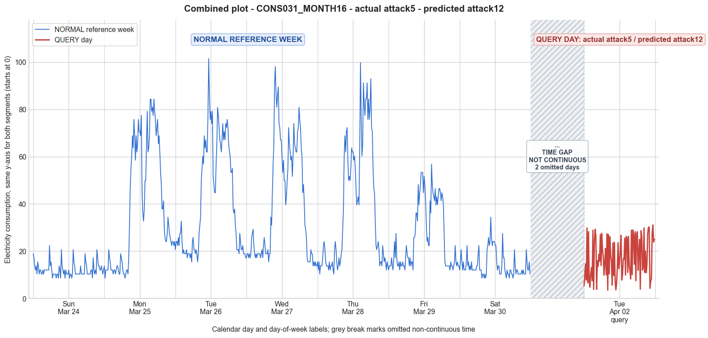

CONS031_MONTH16 · actual attack5 · predicted attack12
- Pair
- CONS031_MONTH16
- GT
- attack5
- Prediction
- attack12
- Binary GT
- attacked
- Binary Prediction
- attacked
- Source
- E010
- Parse
- stored
- Date
- 2013-04-02
- Weekday
- Tuesday
- Latency
- 1.52 min
- Tokens
- 8504

Final output
Classification: - Manipulated Identified Attack: - Most Likely: Attack 12 - Confidence: Medium - Reasoning: The query day (Tuesday) consumption is drastically lower than the regular weekly weekday pattern (mean 17.29 vs typical 38‑42) and does not follow the expected morning‑midday‑evening shape. The values are not simply scaled or shifted; they resemble a low‑consumption profile (similar to a weekend or a different household). This matches Attack 12, where the attacker substitutes their own readings with a lower‑consuming user’s pattern. Alternative attacks considered: • Attack 5 (random values based on average normal consumption * U(0,1)) was ruled out because the query day shows some temporal structure (e.g., slightly higher readings later in the day) rather than pure white noise, and the peak of 31.10 is too low for a completely random substitution with mean ~42. • Attack 3 (per‑sample random scaling) was ruled out because the typical weekday trend (strong midday peak) is completely lost, whereas per‑sample scaling would still roughly preserve the shape despite random variations. Attack_Behavior_Explanation: - How consumption values are manipulated relative to the normal week: The genuine Tuesday consumption (mean ~42, max ~101) has been entirely replaced by the readings of a different, lower‑consuming customer. The substituted data shows a low, relatively flat profile with sporadic small peaks (max 31.10) and a much reduced mean (17.29), lacking the characteristic weekday pattern. - Impact on magnitude and trend: The magnitude is severely reduced (over 50% lower mean), and the trend is completely altered – the regular rise from morning to midday and evening decline is replaced by an irregular, low‑level pattern typical of a low‑usage day or different household. - Possible technical causes: False data injection, where the meter’s reported consumption is swapped with another customer’s data (e.g., by compromising the communication channel or the meter’s memory) so that the attacker pays a lower bill while the legitimate lower‑consuming user is billed for the attacker’s actual usage.
Prompt
You are a domain expert in smart grid security and electricity theft analysis, with deep knowledge of non-technical loss (NTL) attack patterns in smart meters. You are given: 1. A plot of one week of original (normal) energy consumption for a smart meter, provided as context for the customer's typical consumption behavior. 2. A plot of one day of energy consumption for the same smart meter, which may or may not be manipulated. Below are common attack types, each defined by how consumption values are altered, their impact on magnitude and trend, and their possible technical causes. Attack 0: Generated by replacing all electricity consumption samples with zero values for the entire observation duration. Simulates a scenario where no energy usage is reported at all. May be caused by a total meter bypass or severe meter malfunction. Completely eliminates both the trend and magnitude of the consumption profile. Attack 1: Multiplies the actual energy consumption by a constant random value between (0,1). The lower the factor, the higher the severity. Can be triggered by meter bypass, magnetic interference, reverse current, and false data injection. The consumption trend remains the same but the magnitude is uniformly reduced. Attack 2: Generated by replacing consumption samples with zeros for a random duration. Also known as an on-off attack. Can be caused by full meter bypass, false data injection, and reverse current. Changes both the trend and amplitude. Attack 3: The actual consumption is multiplied by different random factors between 0 and 1, with a unique factor per sample. Similar to Attack 1 but the scaling factor varies per reading. Caused by meter bypass, magnetic interference, and reverse current. Changes both the trend and amplitude. Attack 4: Simulates energy theft over a randomly selected period within the observation window. All measurements in that period are reduced. Caused by meter bypass, magnetic interference, reverse current, and false data injection. Changes both the trend and amplitude. Attack 5: Each sample is replaced by a false value obtained by multiplying the average normal consumption by a random variable between 0 and 1, with a different variable per sample. Caused by false data injection. Produces a completely different pattern from the original consumption profile, changing both trend and magnitude. Attack 6: A random cut-off point is selected and all consumption values above it are replaced by that cut-off value. The attacker avoids exceeding a predefined maximum limit. Mainly caused by false data injection. Changes both the trend and amplitude. Attack 7: A random cut-off point is subtracted from each sample; if the result is negative, zero is reported. Similar to Attack 6 but replaces exceeding values with zero instead of the cut-off point. May be caused by false data injection or total meter bypass. Does not change the trend but reduces overall consumption. Attack 9: All samples are replaced by the average daily energy consumption, resulting in a flat constant profile. Easily detectable because constant consumption does not reflect normal customer behavior. Caused by false data injection. Eliminates all trends. Attack 10: Reverses the consumption pattern without reducing the total amount. Applicable when the electricity company uses time-varying pricing, allowing the attacker to shift high consumption to off-peak periods. Caused by false data injection. Changes the trend without decreasing total consumption. Attack 12: The attacker replaces their consumption pattern with that of a lower-consuming user. The legitimate user unknowingly pays the adversary's electricity bill. Caused by false data injection. Attack IEEE: For each 15-minute interval across the entire day, the consumer either reports the actual electricity consumption or substitutes it with zero. The result is a profile where some intervals reflect real consumption while others are zeroed out, creating an irregular pattern across the full day. May be caused by false data injection. Changes both the trend and amplitude. Given the two plots, determine: 1. Whether the day is attacked or original - compare the flagged day against the normal week and assess whether the consumption pattern is consistent with normal behavior or shows signs of manipulation. If the day is consistent with the customer's typical consumption behavior, classify it as original and provide no further analysis. If manipulation is detected, proceed to point 2. 2. Which attack type this most likely is - identify the single most probable attack and justify your choice based on how the flagged day deviates from the normal week. 3. The behavior of the identified attack - explain how the consumption values are manipulated, their impact on magnitude and trend, and the possible technical causes behind this type of attack. Output Format: Classification: - Original | Manipulated Identified Attack: (fill only if manipulated) - Most Likely: Attack X - Confidence: High | Medium | Low - Reasoning: Why it matches Attack X and why Attack Y and Attack Z were ruled out (list top 2 alternatives considered) Attack_Behavior_Explanation: (fill only if manipulated) - How consumption values are manipulated relative to the normal week - Impact on magnitude and trend - Possible technical causes
Reasoning content
We are given a reference week of normal energy consumption for a smart meter, showing daily patterns. The query day is also DAY_ID=2 (Tuesday in the reference week is Day 2: cal_month=3, dow=1). The query day is cal_month=4, dow=1 (Tuesday), so it's a different week but same weekday. The expected pattern should be similar to other Tuesdays (Day 2 in reference week). Let's analyze the data. Reference week Day 2 (Tuesday): min=15.49, max=101.55, std=23.21, mean=42.26. The values show a typical daily pattern with low base consumption at night (around 15-25) and a peak around midday to afternoon (up to 101.55). Day 2 has a clear morning ramp-up and evening decline. Other weekdays: Day 1 (Monday): mean=39.35, max=84.34; Day 3 (Wednesday): mean=40.18, max=98.11; Day 4 (Thursday): mean=38.33, max=99.83. So weekdays tend to have means around 38-42, max around 84-101. Day 5 (Friday): mean=26.21, max=56.80 (lower? maybe a lighter day); Day 6 (Saturday): mean=14.34, max=34.42; Day 0 (Sunday): mean=12.12, max=22.38. So weekends have much lower consumption. The query day has min=3.52, max=31.10, std=8.60, mean=17.29. This is drastically lower than the typical weekday (mean ~40) and even lower than the Saturday (mean 14.34, max 34.42) but higher than Sunday's mean (12.12). The max of 31.10 is well below the weekday peaks. So the query day is inconsistent with a normal Tuesday pattern. It appears to be manipulated. Now, we need to identify which attack type. Let's examine the query day's readings: they range from 3.52 to 31.10, with many values around 3-30. The values seem somewhat random, but there is no clear peak pattern like a normal weekday. Instead, it looks like a low, somewhat constant consumption with occasional spikes but capped around 31. It's not all zeros (not Attack 0). Not a simple scaling (Attack 1 would preserve the trend with reduced magnitude, but the shape would still follow the original pattern scaled down. If we scale Day 2's normal pattern by a factor, say factor around 0.4, we would get peaks around 40, not 31. Actually, if we scaled down the original Day 2, the max would be about 40-50 for a factor of 0.4-0.5. But the query day's max is 31.10, and its pattern is not a smooth scaled version; the std is 8.60 vs 23.21, so it's less variable. So Attack 1 (constant scaling) doesn't produce the observed pattern because the variability relative to mean is too low. Attack 2 (on-off: random zeros for random durations) would produce many zeros interspersed, but there are very few zeros? The min is 3.52, no zeros. So not Attack 2. Attack 3 (random per-sample scaling factor between 0 and 1) would cause varying reduction, but still roughly preserves the shape with noise. The query day's pattern doesn't look like a scaled version of a typical weekday; it's more flat. Attack 4 (partial period reduction) would have a period with lower values while other periods normal. The query day shows consistently low values throughout the day (mean 17.29, max 31.10). Even the "peak" is only 31, and the lowest is 3.52. So it's not a partial attack; it's the entire day with low consumption. Attack 5 (each sample replaced by avg normal * random between 0 and 1) would produce a pattern completely different with random noise. Average normal consumption for Day 2 is 42.26. Multiplying by random values between 0 and 1 would give values up to 42.26, but typically the random values would be uncorrelated, producing no trend. The query day's values range 3.52-31.10, which could be plausible if the random factor is mostly low, but there is still some structure? Let's look at the sequence: 5.40,9.39,14.61,7.77,29.84,6.69,28.26,6.66,4.76,... There are spikes up to ~30. It doesn't look like white noise; there seem to be somewhat higher values in the latter part (like 25-31). The max of 31.10 occurs near the end. Could be Attack 5 with random factors applied to the average. But average normal is 42.26, so max would be <42.26, indeed the max is 31.10. So that's possible. Attack 6: random cut-off, values clipped at a threshold. The query day max is 31.10, so the cut-off would be around 31.10. The normal Day 2 has many values above 31.10 (max 101.55). Clipping at 31.10 would produce a pattern where all high values become exactly 31.10, but we see many different values near that (29.84, 28.26, 27.06, etc.) and 31.10 appears only at the end. The max is 31.10, but there are values like 30.07, 30.22, 29.85, etc. For a clipping attack, we would expect many values exactly equal to the cut-off threshold. There is only one 31.10, and many values slightly below. That doesn't suggest a strict cutoff. Attack 7: subtract a cutoff from each sample, zeroing if negative. This would shift down values, preserving the trend. The trend would remain, but with a floor at zero. The query day values are not just shifted; many are very low (3.52) and the variability is reduced. If we subtract a constant from Day 2, the max would be 101.55 - threshold. To get max 31.10, subtract about 70. The min would become 15.49-70 = negative -> zero. So many values would become zero. But the query day has min 3.52 and no zeros. So not that. Attack 9: flat constant of average daily consumption. The mean of Day 2 is 42.26, but the query day's mean is 17.29, not flat (std 8.60). So not constant. Attack 10: reversed pattern without reducing total consumption. The total would be similar, but the query day total is much lower (mean 17.29 vs 42.26). So not that. Attack 12: substitute another user's pattern. Could be a lower-consuming user's pattern. The pattern could be from a weekend or a different type of user. This is plausible because the consumption is low and somewhat structured but not matching this user's weekday. The query day might be from a low-usage day like a Sunday or a different customer entirely. Attack IEEE: for each 15-min interval, either real or zero. Would create zeros and real values. No zeros present, so not that. So among these, the most likely are Attack 5 (completely random replacement with average*rand) and Attack 12 (replacement with another user's pattern). Attack 5 is described as "produces a completely different pattern from the original consumption profile, changing both trend and magnitude." The query day has a pattern that does not look like noise; it has some temporal structure, albeit different from the normal weekday. It might be someone else's consumption. Also, Attack 3 (random per-sample scaling) would still roughly preserve the shape but with random variations; but here the shape is lost (the midday peak is missing). So I'd rule out Attack 3. Attack 1 is simple scaling, shape preserved, not this. Now, let's consider Attack 12: "The attacker replaces their consumption pattern with that of a lower-consuming user." The query day's values are low and look like they could belong to a lower-consuming user. For instance, compare to Day 6 (Saturday): mean 14.34, max 34.42. The query day mean 17.29 is between Saturday and Friday. Day 5 (Friday) mean 26.21, max 56.80. The query day max 31.10 is close to Saturday's max 34.42. The query day pattern, interestingly, does not have the typical weekday shape, but it might resemble a weekend pattern? Let's look at Day 6's data: it starts around 12-15, then a small peak in the afternoon with values like 20-25, max 34.42. The query day has values that spike above 25 occasionally, up to 31.10, and a mean of 17.29, which is similar to a weekend day. So it is plausible that the attacker substituted a lower-consuming user's profile (e.g., a weekend profile) to avoid suspicion. This would be Attack 12. But could it be Attack 5? Attack 5 replaces each sample with a random value generated from average normal consumption * random (0,1). The average normal consumption for this user's weekday is ~42. So the generated values would be uniformly random between 0 and 42, with no temporal structure. The query day has values that seem somewhat clustered: early morning values are lower (5.40, 9.39, 14.61, 7.77, 29.84...). There's a spike at 29.84 early, then later more frequent spikes above 20. It doesn't look purely random; it almost looks like a low-usage day with some small peaks. It might be a real pattern from a different user or a different day type. So Attack 12 is more plausible. We also considered Attack 3, but that would scale per sample, so the shape would be a distorted version of the original. The original Day 2 has a midday peak of 101.55. If per-sample scaling factors are random, you'd still see a roughly higher period around midday, but with randomization. The query day does not have a clear midday peak; the values are more scattered throughout the day with multiple small peaks. So Attack 3 is less likely. Attack 4 selects a random period and reduces it. If the entire day is reduced, that's not Attack 4 (which is a partial period). The description says "over a randomly selected period within the observation window. All measurements in that period are reduced." Here, the whole day is low, so it could be a period covering the whole day? But that would be a degenerate case, not typical. Attack 4 usually leaves some parts normal. So unlikely. Thus, I'm leaning toward Attack 12. Now confidence: The query day's consumption profile is not matching this user's typical Tuesday. It is much lower, and the pattern is unlike the weekday shape. It looks like it could be from a different user or a weekend profile. However, we cannot be absolutely certain it's exactly Attack 12 because we don't have other users' data to compare. But it's the best fit among the given attacks. Confidence: Medium. Attack_Behavior_Explanation: The attacker replaced the normal Tuesday consumption with that of a lower-consuming user (possibly mimicking a weekend or a different household). This reduces the magnitude significantly (mean from ~42 to ~17) and changes the trend from a weekday pattern with a single large midday peak to a flatter, low-level pattern with occasional small peaks. This can be caused by false data injection where the meter reporting is swapped with another customer's data. Now final output format.